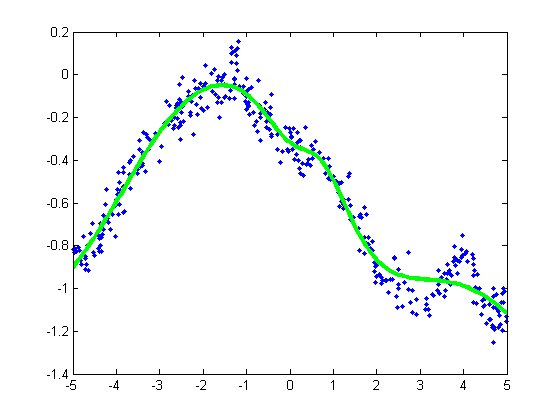

setSeed(0);
nVars = 1;
nInstances = 400;
options.Display = 'iter';
options.MaxIter = 50;
[X,y] = makeData('regressionNonlinear',nInstances,nVars);
lambda = 0;
model = mlpRegressFitSchmidt(X, y, [10], lambda, options);
figure;
Xtest = [-5:.05:5]';
[yhat, v] = mlpRegressPredictSchmidt(model, Xtest);
plot(X,y,'.');
hold on
h=plot(Xtest,yhat,'g-');
set(h,'LineWidth',3);
Iteration FunEvals Step Length Function Val Opt Cond
1 2 2.47792e-005 1.18880e+003 1.77347e+004
2 3 1.00000e+000 6.15488e+002 1.06048e+004
3 4 1.00000e+000 1.95163e+002 3.61327e+003
4 5 1.00000e+000 7.47156e+001 1.78245e+003
5 6 1.00000e+000 2.42910e+001 1.23812e+003
6 7 1.00000e+000 2.12047e+001 1.96031e+003
7 8 1.00000e+000 1.49650e+001 5.86543e+002
8 9 1.00000e+000 1.35018e+001 3.12003e+002
9 10 1.00000e+000 1.08864e+001 4.03555e+002
10 11 1.00000e+000 9.63225e+000 2.03456e+002
11 12 1.00000e+000 9.37029e+000 6.98072e+001
12 13 1.00000e+000 9.30759e+000 9.27962e+001
13 14 1.00000e+000 9.17121e+000 1.69727e+002
14 15 1.00000e+000 8.84721e+000 2.95482e+002
15 16 1.00000e+000 8.12823e+000 4.62693e+002
16 17 1.00000e+000 6.96771e+000 5.86124e+002
17 18 1.00000e+000 5.43613e+000 5.08603e+002
18 19 1.00000e+000 3.77626e+000 1.50432e+002
19 20 1.00000e+000 3.45934e+000 6.74565e+001
20 21 1.00000e+000 3.41280e+000 8.24324e+001
21 22 1.00000e+000 3.35856e+000 9.28338e+001
22 23 1.00000e+000 3.12090e+000 5.57683e+001
23 24 1.00000e+000 2.89684e+000 8.85664e+001
24 25 1.00000e+000 2.80185e+000 1.29783e+002
25 26 1.00000e+000 2.72601e+000 7.68706e+001
26 27 1.00000e+000 2.64510e+000 2.46954e+001
27 28 1.00000e+000 2.63597e+000 1.99429e+001
28 29 1.00000e+000 2.62821e+000 1.32441e+001
29 30 1.00000e+000 2.61123e+000 1.66008e+001
30 31 1.00000e+000 2.59361e+000 2.84471e+001
31 32 1.00000e+000 2.56685e+000 3.72037e+001
32 33 1.00000e+000 2.54518e+000 3.57743e+001
33 34 1.00000e+000 2.52830e+000 2.60294e+001
34 35 1.00000e+000 2.51243e+000 2.20528e+001
35 36 1.00000e+000 2.50229e+000 1.18282e+001
36 37 1.00000e+000 2.50002e+000 2.27115e+001
37 38 1.00000e+000 2.49531e+000 9.96987e+000
38 39 1.00000e+000 2.49479e+000 7.26756e+000
39 40 1.00000e+000 2.49327e+000 5.34111e+000
40 41 1.00000e+000 2.49059e+000 9.51997e+000
41 42 1.00000e+000 2.48082e+000 2.00906e+001
42 43 1.00000e+000 2.45972e+000 2.85002e+001
43 44 1.00000e+000 2.42327e+000 2.07994e+001
44 45 1.00000e+000 2.40707e+000 1.36598e+001
45 47 4.68211e-001 2.39794e+000 3.63684e+001
46 48 1.00000e+000 2.38426e+000 2.38558e+001
47 49 1.00000e+000 2.37375e+000 1.80864e+001
48 50 1.00000e+000 2.36706e+000 2.09361e+001
49 51 1.00000e+000 2.36214e+000 8.69823e+000
50 52 1.00000e+000 2.36006e+000 1.42104e+001
Exceeded Maximum Number of Iterations
